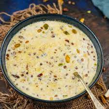

Sheer Khurma

A traditional dessert specially made for Eid festivals. No Eid breakfast is complete without this tasty and easy dish.
Ingredients
- 1 quart milk
- 5 tablespoon white sugar
- 8 cardamom seeds
- 8 ounce semiya
- 8 raisins
Directions
- Bring milk, sugar, and cardamom seeds to a boil in a saucepan; reduce heat to medium-low and simmer for 5 minutes
- Stir broken vermicelli pasta and raisins into milk mixture and simmer until pasta is tender and the cream sauce has thickened, about 5 more minutes.
- Remove from heat and let stand until warm, about 15 minutes. If pudding is too thick, stir in a little milk.